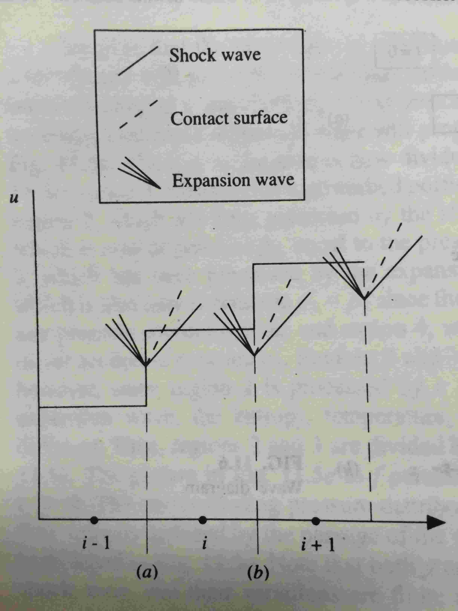

Notes on Book “Computational Fluid Dynamics - The Basics with Applications”
2017-09-05
- 1 Chapter 2 The Governing Equations of Fluid Dynamics
- 2 Chapter 4 Basic Aspects of Discretization
- 3 Chapter 6 Some Simple CFD
Techniques: A Beginning
- 3.1 6.2 The Lax-Wendroff Technique
- 3.2 6.3 Maccormack’s Technique
- 3.3 6.5 The Relaxation Techinique and Its Use with Low-Speed Inviscid Flow
- 3.4 6.6 aspects of Numerical Dissipation and Dispersion; Artificial Viscousity
- 3.5 6.7 The Alternating-Direction Implicit (ADI) Technique
- 3.6 6.8 The Pressure Correction Technique: Application to Imcompressible Viscous Flow
- 4 Chapter 11 Some Advanced Topics in
Modern CFD: A Discussion
- 4.1 11.2 The Conservation Form of the Governing Flow Equations Revisited: The Jacobians of the System
- 4.2 11.3 Additional Considerations for Implicit Methods
- 4.3 11.4 Upwind Schemes
- 4.4 11.5 Second-Order Upwind Schemes
- 4.5 11.6 High-Resolution Schemes: TVD and Flux Limiters
- 4.6 11.8 Multigrid Method
1 Chapter 2 The Governing Equations of Fluid Dynamics
1.1 2.6 The Momentum Equation
Non-conservation form
\[ \begin{align} \rho \frac{D u_{i}}{D t} = - \frac{\partial p}{\partial x_{i}} + \frac{\partial \tau_{ji}}{\partial x_{j}} + \rho F_{i} \end{align} \]
Conservation form
\[ \begin{align} \frac{\partial \rho u_{i}}{\partial t} + \nabla \cdot (\rho u_{i} \vec{u}) = - \frac{\partial p}{\partial x_{i}} + \frac{\partial \tau_{ji}}{\partial x_{j}} + \rho F_{i} \end{align} \]
1.2 2.10 Forms of the Governing Equations Particularly Suited for CFD
Conservation form falls into 2 categories: strong and weak.
Strong conservation form
\[ \begin{align} \frac{\partial U}{\partial t} + \frac{\partial F}{\partial x} + \frac{\partial G}{\partial y} + \frac{\partial H}{\partial z} = J \end{align} \]
The terms in strong conservation form have everything buried inside these derivatives.
Weak conservation form
\[ \begin{align} \frac{\partial \rho u_{i}}{\partial t} + \nabla \cdot (\rho u_{i} \vec{u}) = - \frac{\partial p}{\partial x_{i}} + \frac{\partial \tau_{ji}}{\partial x_{j}} + \rho F_{i} \end{align} \]
Weak conservation form has a number of \(x, y, z\) derivatives explicitly appearing on the right hand side.
2 Chapter 4 Basic Aspects of Discretization
2.1 4.4 Explicit and Implicit Approaches: Definitions and Contrasts
Consider 1D heat conduction equation
\[ \frac{\partial T}{\partial t} = \alpha \big ( \frac{\partial^{2} T}{\partial x^{2}} \big ) \]
An explicit finite difference approach
\[ \frac{T^{n+1}_{i} - T^{n}_{i}}{\Delta t} = \alpha \frac{T^{n}_{i+1} - 2 T^{n}_{i} + T^{n}_{i-1}}{(\Delta x)^{2}} \]
Solution method is as follows,
\[ T^{n+1}_{i} = T^{n}_{i} + \alpha \frac{\Delta t}{(\Delta x)^{2}} \big (T^{n}_{i+1} - 2 T^{n}_{i} + T^{n}_{i-1} \big ) \]
Crank-Nicolson form
Implicit finite difference approach
\[ \frac{T^{n+1}_{i} - T^{n}_{i}}{\Delta t} = \alpha \frac{\frac{1}{2} \big ( T^{n+1}_{i+1} + T^{n}_{i+1} \big ) - \frac{1}{2} \big ( 2 T^{n+1}_{i} + 2 T^{n}_{i} \big ) + \frac{1}{2} \big ( T^{n+1}_{i-1} + T^{n}_{i-1} \big ) }{(\Delta x)^{2}} \]
Solution method can be in tridiagonal matrix form.
Consider nonlinear parital differential equation.
\[ \frac{\partial T}{\partial t} = \alpha (T) \big ( \frac{\partial^{2} T}{\partial x^{2}} \big ) \]
While the nonlinearity has no effect on the explicit approach, it results in a nonlinear algebraic equations for CN form. To circumvent this difficulty, the difference equations are ‘linearized’, for example, the coefficient \(\alpha(T)\) is simply evaluated as \(\alpha(T^{n}_{i})\).
2.2 4.5 Errors and An Analysis of Stability
Consider 1D heat conduction equation as model equation,
\[ \frac{\partial T}{\partial t} = \alpha \frac{\partial^{2} T}{\partial x^{2}} \]
Define discretization error is \(A-D\), round-off error is \(\epsilon = N - D\), where \(A\) is analytical solution of partial differential equation, \(D\) is exact solution of differce equation, \(N\) is numerical solution from a real computer with finite accuracy.
Then the exact solution \(D\) and the numerical solution \(N\) must satisfy the difference equation. Subtract \(D\) part from \(N\) equation, we get the round-off part. Obviously, the round-off error also satisfies the difference equation.
Define stability condition,
\[ | \frac{\epsilon^{n+1}_{i}}{\epsilon^{n}_{i}} | \leq 1 \]
The value of \(\epsilon\) is random with respect to spatial variable \(x\). Then it can be represented as Fourier series.
\[ \epsilon(x) = \sum_{m} A_{m} e^{i k_{m} x} = \sum_{m} A_{m} \big ( cos k_{m} x + i sin k_{m} x \big ) \]
where \(k_{m}\) is the wavenumber. And the real part of the sum series is the round-off error.
Define the length of the grid is \(L\), the minimum mesh size is \(\Delta x\), and there are \(N\) intervals across the length \(L\). Then the wave length ranges \([2 \Delta x, L]\), with corresponding wave number ranges \([\frac{2 \pi}{L}, \frac{2 \pi}{2 \Delta x} = \frac{2 \pi}{L} \frac{N}{2}]\).
The wave number is given by
\[ k_{m} = \frac{2 \pi}{\lambda} \]
\(\epsilon\) also varies with time. Assume the amplitude \(A_{m}\) is an exponential function of time.
\[ \epsilon(x, t) = \sum^{N/2}_{m=1} A_{m}(t) e^{i k_{m} x} = \sum^{N/2}_{m=1} e^{a t} e^{i k_{m} x} \]
where \(a\) is constant.
Take single term in series to analyse.
\[ \epsilon_{m}(x, t) = e^{a t} e^{i k_{m} x} \]
Substitute it into the difference equation of round-off error,
\[ \begin{align} & \frac{e^{a(t+\Delta t)} e^{i k_{m} x} - e^{a t} e^{i k_{m} x}}{\alpha \Delta t} \\ = & \frac{e^{a t} e^{i k_{m} (x + \Delta x)} - 2 e^{a t} e^{i k_{m} x} + e^{a t} e^{i k_{m} (x-\Delta x)}}{(\Delta x)^{2}} \end{align} \]
Rearrange the equation, we obtain
\[ e^{a \Delta t} = 1 - \frac{4 \alpha \Delta t}{(\Delta x)^{2}} sin^{2} \frac{k_{m} \Delta x}{2} \]
Then the stability requirement is
\[ \begin{align} |\frac{\epsilon^{n+1}_{i}}{\epsilon^{n}_{i}}| &= |\frac{e^{a(t+\Delta t)} e^{i k_{m} x}}{e^{a t} e^{i k_{m} x}}| \\ &= |e^{a \Delta t}| \\ &\leq 1 \\ \end{align} \]
Evaluate it,
\[ \frac{\alpha \Delta t}{(\Delta x)^{2}} \leq \frac{1}{2} \]
which is the explicit stability requirement.
The above analysis is called von Neumann stability method, often used to study the stability properties of linear difference equations.
3 Chapter 6 Some Simple CFD Techniques: A Beginning
3.1 6.2 The Lax-Wendroff Technique
It’s a marching method.
The value of flow variables at the grid point \((i, j)\) at time \(t + \delta t\) is given by Taylor series. The time derivatives in Taylor series are replaced by the spatial derivatives in the governing flow equations. With suitable finite difference scheme, the spatial derivatives are represented explicitly, using points around \((i, j)\). It’s illustrated in the following figure.

3.2 6.3 Maccormack’s Technique
It’s marching method, similar to Lax-Wendroff technique.
However, it avoids the algebra of second order time derivatives. Instead, it employs the procedure of predictor step with first order forward difference and corrector step with first order rearward difference. The average of the results from predictor and corrector is the time derivative we use to determine the value at time \(t + \delta t\).
3.3 6.5 The Relaxation Techinique and Its Use with Low-Speed Inviscid Flow
Low speed, subsonic inviscid flow is governed by elliptic partial differential equations. The relaxation rechnique is frequently applied to the solution of low speed sonic flow. Relaxation techniques can be explicit or implicit. Here, we discuss an explicit relaxation technique, called a point iterative method.
Take the example of Laplace’s equation.
\[ \Delta \Phi = 0 \]
With \(2\)nd order central differences, there will be a great many equations for each unknows on grid points of given meshes. Direct method can be Cramer’s rule or Gaussian elimination. However, the other way is relaxation technique.
We can employ Jacobi method or Gauss-Seidel method. Further, the convergence can be enhanced by successive overrelaxation or underrelaxation.
3.4 6.6 aspects of Numerical Dissipation and Dispersion; Artificial Viscousity
Consider a model equation
\[ \frac{\partial u}{\partial t} + a \frac{\partial u}{\partial x} = 0 \]
with \(a > 0\).
Discretize this equation by \(1\)st order forward difference in time and \(1\)st order rearward difference in space.
Then the difference equation is
\[ \frac{u^{t+\Delta t}_{i} - u^{t}_{i}}{\Delta t} + a \frac{u^{t}_{i} - u^{t}_{i-1}}{\Delta t} = 0 \]
Expand in Taylor series, we have
\[ \begin{align} & \Big [ \big ( \frac{\partial u}{\partial t} \big )^{t}_{i} + ( \frac{\partial^{2} u}{\partial t^{2}} \big )^{t}_{i} \frac{\Delta t}{2} + ... \Big ] \\ & a \Big [ \big ( \frac{\partial u}{\partial t} \big )^{t}_{i} - ( \frac{\partial^{2} u}{\partial t^{2}} \big )^{t}_{i} \frac{\Delta x}{2} + ... \Big ] = 0 \\ \end{align} \]
Rearrange and drop the subscript \(i\) and superscript \(t\), but keep in mind all derivatives are evaluated at point \(i\) and at time \(t\).
\[ \frac{\partial u}{\partial t} + a \frac{\partial u}{\partial x} = - \frac{\partial^{2} u}{\partial t^{2}} \frac{\Delta t}{2} + a \frac{\partial^{2} u}{\partial x^{2}} \frac{\Delta x}{2} + ... \]
The right side is the truncation error asscoiated with the difference equation.
We want to replace \(\frac{\partial^{2} u}{\partial t^{2}}\) with \(\frac{\partial^{2} u}{\partial x^{2}}\). Steps are as follows.
Differentiate with respect to \(t\) and \(x\),
\[ \begin{align} \frac{\partial^{2} u}{\partial t^{2}} + a \frac{\partial^{2} u}{\partial t \partial x} = - \frac{\partial^{3} u}{\partial t^{3}} \frac{\Delta t}{2} + a \frac{\partial^{3} u}{\partial t \partial x^{2}} \frac{\Delta x}{2} + O((\Delta t)^{2}, (\Delta x)^{2}) \\ a \frac{\partial^{2} u}{\partial x \partial t} + a^{2} \frac{\partial^{2} u}{\partial x^{2}} = - a \frac{\partial^{3} u}{\partial x \partial t^{2}} \frac{\Delta t}{2} + a^{2} \frac{\partial^{3} u}{\partial x^{3}} \frac{\Delta x}{2} + O((\Delta t)^{2}, (\Delta x)^{2}) \\ \end{align} \]
Combine and we get
\[ \frac{\partial^{2} u}{\partial t^{2}} = a^{2} \frac{\partial^{2} u}{\partial x^{2}} + \frac{\Delta t}{2} \Big ( - \frac{\partial^{3} u}{\partial t^{3}} + a \frac{\partial^{3} u}{\partial x \partial t^{2}} \Big ) + \frac{\Delta x}{2} \Big ( \frac{\partial^{3} u}{\partial t \partial x^{2}} - a^{2} \frac{\partial^{3} u}{\partial x^{3}} \Big ) + O((\Delta t)^{2}, (\Delta x)^{2}) \\ \]
Then we need to replace \(\frac{\partial^{3} u}{\partial t^{3}}, \frac{\partial^{3} u}{\partial x \partial t^{2}}, \frac{\partial^{3} u}{\partial t \partial x^{2}}\) with \(\frac{\partial^{3} u}{\partial x^{3}}\).
\[ \begin{align} \frac{\partial^{3} u}{\partial t^{3}} + a \frac{\partial^{3} u}{\partial x \partial t^{2}} &= O(\Delta t, \Delta x) \\ \frac{\partial^{3} u}{\partial t^{2} \partial x} + a \frac{\partial^{3} u}{\partial t \partial x^{2}} &= O(\Delta t, \Delta x) \\ a \frac{\partial^{3} u}{\partial x^{2} \partial t} + a^{2} \frac{\partial^{3} u}{\partial x^{3}} &= O(\Delta t, \Delta x) \\ \frac{\partial^{3} u}{\partial t^{3}} + a^{2} \frac{\partial^{3} u}{\partial x^{3}} &= O(\Delta t, \Delta x) \\ \end{align} \]
Finally, the real PDE we solve after differencing is (6.56).
which is the exact solution (no truncation error), called the modified equation.
\(2\)nd order derivatives (actually even order derivatives) on the right side is numerical dessipation, the coefficients of \(\frac{a \Delta x}{2} (1 - \nu)\) is the artificial viscosity. Effects of numerical dissipation is illustrated in Fig 6.5. Artificial viscosity compromises the accuracy of a solution and improve the stability of a solution. \(3\)rd order derivatives (actually odd order derivatives) is numerical dispersion. Effects of dispersion is illustrated in Fig 6.6.
3.5 6.7 The Alternating-Direction Implicit (ADI) Technique
Consider unsteady 2D heat conduction equation.
\[ \frac{\partial T}{\partial t} = \alpha \big ( \frac{\partial^{2} T}{\partial x^{2}} + \frac{\partial^{2} T}{\partial y^{2}} \big ) \]
The multidimensionality involving more than single variable in addition to the marching variable destroys the tridiagonal nature of the difference equations in CN form. So we employ alternating direction implicit (ADI) scheme.
In fact, it involves two step process. First, only the \(x\) derivative is treated implicitly. ref (6.64).
Second, \(y\) is the target. ref (6.66).
Then both can be arranged in tridigonal form.
3.6 6.8 The Pressure Correction Technique: Application to Imcompressible Viscous Flow
Inviscid incompressible flow, governed by elliptic differential equations, can be solved by the relaxation technique.
Viscous incompressible flow, governed by mixed elliptic parabolic partial differential equations, can be solved by the pressure correction technique. This technique is embodied in SIMPLE (Semi-Implicit Method for Pressure-Linked Equations).
By the Anderson’s experience, a compressible flow code run for a flow which is everywhere at a local Mach number of about \(0.2\) or less takes a prohibitive amount of time to converge, and indeed has a tendency to be unstable.
3.6.1 6.8.2 Some Comments on Central Differencing
Take the 2D incompressible continuity equation as an example,
\[ \frac{\partial u}{\partial x} + \frac{\partial v}{\partial y} = 0 \]
I apply a central difference equation, the equation becomes
\[ \frac{u_{i+1, j} - u_{i-1, j}}{2 \Delta x} + \frac{v_{i, j+1} - v_{i, j-1}}{2 \Delta y} = 0 \]
According to this difference scheme, if the following velocity distribution is given1,
Then a mathematically correct but physically nonsensical solution is obtained.
We want to fix such weakness of central difference scheme. One fix is to use upwind differences, which will be discussed in Chapter 11.Another fix presented here is to maintain central differencing but stagger the grid.
A staggered grid is illustrated as follows.
The velocities are calculated at the open grid points. The central difference equation for point \((i, j)\) is
\[ \frac{u_{i+1/2, j} - u_{i-1/2, j}}{\Delta x} + \frac{v_{i, j+1/2} - v_{i, j-1/2}}{\Delta y} = 0 \]
The velocity at point \((i, j)\) is then interpolated by the calculated values.
3.6.2 6.8.3 The Philosophy of the Pressure Correction Method
It’s basically an iterative approach. The process is as follows.
- Guess the pressure field as \(p^{*}\).
- Substitute \(p^{*}\) into momentum equation to solve for velocities, denoted by \(u^{*}, v^{*}, w^{*}\).
- Employ continuity equation to check \(p^{*}, u^{*}, v^{*}, w^{*}\). Generally they will not satisfy that equation. Hence, using continuity euqation, construct a pressure correction \(p^{\prime}\). Then the “corrected” pressure \(p = p^{*} + p^{\prime}\). Velocities are corrected correspondingly.
- Substitute the new pressure \(p\) into the above iterative approach until a velocity field is found that does satisfy contuity equation.
3.6.3 Sample Code of SIMPLE Algorithm in Fortran 90
To be added.
4 Chapter 11 Some Advanced Topics in Modern CFD: A Discussion
4.1 11.2 The Conservation Form of the Governing Flow Equations Revisited: The Jacobians of the System
It’s simply a habit that finite difference codes are based on the conservation form of NS equation. The generic form is
\[ \frac{\partial U}{\partial t} + \frac{\partial F}{\partial x} + \frac{\partial G}{\partial y} + \frac{\partial H}{\partial z} = J \]
where \(U, F, G, H, J\) are column vectors involving the flux variables. \(U = \big [ \rho, \rho u, \rho v, \rho w, \rho [e + (u^{2}+v^{2}+w^{2})/2] \big ]\) and \(F=F(U), G=G(U), H=H(U)\). They are generally nonlinear functions. To examine the mathematical characteristics of the generic form, we first cast it in quasi-linear form.
\[ \frac{\partial U}{\partial t} + \frac{\partial F}{\partial U} \frac{\partial U}{\partial x} + \frac{\partial G}{\partial U} \frac{\partial U}{\partial x} + \frac{\partial H}{\partial U} \frac{\partial U}{\partial z} = J \]
where \(\frac{\partial F}{\partial U}, \frac{\partial G}{\partial U}, \frac{\partial H}{\partial U}\) are called the jacobian matrices of the flux vectors \(F, G, H\).
4.1.1 11.2.1 Specialization to One-Dimensional Flow
For the sake of analysis, specialize to an unsteady, 1D, inviscid flow with no body forces.
Governing equations are
\[ \begin{align} \frac{\partial U}{\partial t} + \frac{\partial F}{\partial x} &= 0 \\ \end{align} \]
To eliminate \(p\), the perfect gas equation of state is written as 2
\[ p = \rho R T = \rho (\gamma - 1) \frac{R}{\gamma - 1} T = (\gamma - 1) \rho C_{v} T = (\gamma - 1) \rho e \]
Then
\[ \begin{align} \rho e &= \rho (E - \frac{1}{2} u^{2}) = \epsilon - \frac{\rho u^{2}}{2} = \epsilon - \frac{m^{2}}{2 \rho} \\ p &= (\gamma - 1) (\epsilon - \frac{m^{2}}{2 \rho}) \\ \end{align} \]
Without \(p\),
\[ F = \begin{Bmatrix} m \\ \frac{m^{2}}{\rho} + (\gamma-1)(\epsilon-\frac{m^{2}}{2 \rho}) \\ \frac{m}{\rho} \Big [ \epsilon + (\gamma-1)(\epsilon-\frac{m^{2}}{2\rho}) \Big ] \\ \end{Bmatrix} = \begin{Bmatrix} m \\ M \\ N \\ \end{Bmatrix} \]
In quasi-linear form,
\[ \begin{align} \frac{\partial U}{\partial t} + A \frac{\partial U}{\partial x} &= 0 \\ A &= \begin{bmatrix} \frac{\partial m}{\partial \rho} & \frac{\partial m}{\partial m} & \frac{\partial m}{\partial \epsilon} \\ \frac{\partial M}{\partial \rho} & \frac{\partial M}{\partial m} & \frac{\partial M}{\partial \epsilon} \\ \frac{\partial N}{\partial \rho} & \frac{\partial N}{\partial m} & \frac{\partial N}{\partial \epsilon} \\ \end{bmatrix} \\ A &= \begin{bmatrix} 0 & 1 & 0 \\ (\gamma - 3) \frac{u^{2}}{2} & (3 - \gamma) u & \gamma - 1 \\ (\gamma - 1) u^{3} - \gamma u E & - \frac{3}{2} (\gamma - 1) u^{2} + \gamma E & \gamma u \\ \end{bmatrix} \\ \end{align} \]
Examine the eigenvalues of the jacobian matrix,
\[ | A - \lambda I | = 0 \]
Three solutions: \(\lambda_{1} = u, \lambda_{2} = u + c, \lambda_{3} = u - c\), where \(c\) is the speed of sound.
4.2 11.3 Additional Considerations for Implicit Methods
Novel ideas are used to preserve the tridiagonal nature of the implicit solution in spite of the nonlinearity and multidimensionality.
4.2.1 11.3.1 Linearization of the Equations: The Beam and Warming Method
A simple method is “Lagging coefficients” method, which evaluates the coefficients using known calues at the previous step.
Another method is the Beam and Warming method.
Consider the conservation form.
\[ \begin{align} \frac{\partial m}{\partial t} + \frac{\partial (m^{2}/\rho + p)}{\partial x} &= 0 \\ m &= \rho u \\ \end{align} \]
Since an implicit method involves terms such as \((m^{2}/\rho + p)^{n+1}_{i+1}\). Then \((m^{2})^{n+1}_{i+1} / (\rho)^{n+1}_{i+1}\) is an nonlinear term, which can not be computed directly.
Consider
\[ \frac{\partial U}{\partial t} + \frac{\partial F}{\partial x} = 0 \]
CN scheme 3 is applied,
\[ U^{n+1}_{i} = U^{n}_{i} - \frac{\Delta t}{2} \Big [ (\frac{\partial F}{\partial x})^{n}_{i} + (\frac{\partial F}{\partial x})^{n+1}_{i}\Big ] \]
Expand \(F\),
\[ \begin{align} F^{n+1}_{i} &= F^{n}_{i} + (\frac{\partial F}{\partial U})^{n}_{i} (U^{n+1}_{i} - U^{n}_{i}) + O(\Delta t) \\ &= F^{n}_{i} + A^{n}_{i} (U^{n+1}_{i} - U^{n}_{i}) \end{align} \]
Substitute \(F^{n+1}_{i}\) and replace \(x\) derivatives with central differences, finally we get a linear tridigonal matrix, which can be solved by Thomas’ algorithm.
4.2.2 11.3.2 The Multi-Dimensional Problem: Approximate Factorization
Consider
\[ \frac{\partial U}{\partial t} + \frac{\partial F}{\partial x} + \frac{\partial G}{\partial y} = 0 \]
Apply trapeziodal rule,
\[ U^{n+1} = U^{n} - \frac{\Delta t}{2} \Big [ (\frac{\partial F}{\partial x} + \frac{\partial G}{\partial y})^{n} + (\frac{\partial F}{\partial x} + \frac{\partial G}{\partial y})^{n+1} \Big ] \]
With Beam-Warming method, we have
\[ \begin{align} & \Big \{ I + \frac{\Delta t}{2} \big [ \frac{\partial }{\partial x} (A^{n}) + \frac{\partial }{\partial y} (B^{n}) \big ] \Big \} U^{n+1} = \\ & \Big \{ I + \frac{\Delta t}{2} \big [ \frac{\partial }{\partial x} (A^{n}) + \frac{\partial }{\partial y} (B^{n}) \big ] \Big \} U^{n} - \Delta t \big ( \frac{\partial F}{\partial x} + \frac{\partial G}{\partial y} \big )^{n} \\ \end{align} \]
Depending on the finite difference scheme, there will be different representations. If we choose central difference scheme, then a five-point difference module is obtained. However, the tremendous computational advantages of tridiagonal form is lost.
Approximate factorization, rooted in ADI, is an improvement. In this procedure, rewrite the above equation in “approximate” form.
\[ \begin{align} & \Big [ I + \frac{\Delta t}{2} \frac{\partial }{\partial x} (A^{n}) \Big ] \Big [ I + \frac{\Delta t}{2} \frac{\partial }{\partial y} (B^{n}) \Big ] U^{n+1} = \\ & \Big [ I + \frac{\Delta t}{2} \frac{\partial }{\partial x} (A^{n}) \Big ] \Big [ I + \frac{\Delta t}{2} \frac{\partial }{\partial y} (B^{n}) \Big ] U^{n} - \Delta t \big ( \frac{\partial F}{\partial x} + \frac{\partial G}{\partial y} \big )^{n} \\ \end{align} \]
The extra terms \(\frac{(\Delta t)^{2}}{4} \Big [ \frac{\partial }{\partial x} (A^{n}) \frac{\partial }{\partial y} (B^{n}) \Big ] U^{n+1}, \frac{(\Delta t)^{2}}{4} \Big [ \frac{\partial }{\partial x} (A^{n}) \frac{\partial }{\partial y} (B^{n}) \Big ] U^{n}\) involves \((\Delta t)^{2}\) and so they do not affect the second order accuracy of the original form.
The delta form shows the advantages.
\[ \begin{align} \Big [ I + \frac{\Delta t}{2} \frac{\partial }{\partial x} (A^{n}) \Big ] \bar{\Delta U} &= - \Delta t \big ( \frac{\partial F}{\partial x} + \frac{\partial G}{\partial y} \big )^{n} \\ \Big [ I + \frac{\Delta t}{2} \frac{\partial }{\partial x} (B^{n}) \Big ] \Delta U^{n} &= \bar{\Delta U} \\ \Delta U^{n} &\equiv U^{n+1} - U^{n} \\ \end{align} \]
4.2.3 11.3.3 Block Tridiagonal Matrices
In practice, \(U\) consists of five elements. Therefore, there will be block tridiagonal matrix. Sample Fortran code is to be added.
4.3 11.4 Upwind Schemes
Central difference scheme employed in flow field involving discontinuities causes severe oscillations.
To explain the philosophy of upwind scheme, consider the first order wave equation,
\[ \frac{\partial u}{\partial t} + c \frac{\partial u}{\partial x} = 0 \]
Assume there is a discontinuity in \(u\) across wave.
If central difference scheme is used, then point \(i\) is influenced by point \(i-1\) and \(i+1\). In fact, the latter point is not within the domain of dependence of point \(i\). So, the information propagation is nonsensical. And the iteration will reach a blow-up.
So, we apply an one-sided difference.
\[ \frac{u^{n+1}_{i} - u^{n}_{i}}{\Delta t} = -c \frac{u^{n}_{i} - u^{n}_{i-1}}{\Delta x} \]
which is an upwind difference, leading to a stable iteration.
Modern upwind schemes include Total Variation Diminishing (TVD) schemes, flux splitting, flux limiters, Godunov schemes, approximate Riemann solvers. And there schemes attempt to account for the propagation of information throughout the flow.
4.3.1 11.4.1 Flux-Vector Splitting
Consider an unsteady 1D Euler equation governing subsonic flow,
\[ \frac{\partial U}{\partial t} + \frac{\partial F}{\partial x} = 0 \]
With some algebra, we have
\[ \begin{align} F &= A U \\ A &= \frac{\partial F}{\partial U} \\ F &= F^{+} + F^{-} \\ &= A^{+} U + A^{-} U \\ &= T [\lambda^{+}] T^{-1} U + T [\lambda^{-}] T^{-1} U \\ [\lambda] &= [\lambda^{+}] + [\lambda^{-}] \\ &= \begin{bmatrix} u & & \\ & u+c & \\ & & 0 \\ \end{bmatrix} + \begin{bmatrix} 0 & & \\ & 0 & \\ & & u-c \\ \end{bmatrix} \end{align} \]
Then the equation is rewritten as
\[ \frac{\partial U}{\partial t} + \frac{\partial F^{+}}{\partial x} + \frac{\partial F^{-}}{\partial x} = 0 \]
where \(\partial F^{+} / \partial x\) will be replaced with a rearward difference while \(\partial F^{-} / \partial x\) will be replaced with a forward difference.
An important improvisation on flux-vector splitting is Van Leer’s flux splitting, which improves the performance of the numerical scheme for local Mach number near \(1\).
4.3.2 11.4.2 The Godunov Approach
The idea: exact solutions of Euler equations for a local region of the flow be pieced together to synthesize the general flow field.
The numerical solution of finite difference is essentially a piecewise-constant distribution in space, illustrated in the following figure.

The piecewise-constant distribution will trigger a series of mini-shock-tube problem. The numerical solution of the general flow field is being constructed by a local application of exact solution of the Riemann problem (the shock tube problem).
4.4 11.5 Second-Order Upwind Schemes
First order upwind scheme is diffusive.
Employ one-sided second order differences, we get second order upwind scheme, which improves it. However, the oscillations appear in second order upwind scheme. Hence, the disappearance of oscillations in first order upwind scheme is more due to the first order accuracy than to the philosophy of upwinding.
4.5 11.6 High-Resolution Schemes: TVD and Flux Limiters
Model equation
\[ \frac{\partial U}{\partial t} + \frac{\partial F(U)}{\partial x} = 0 \]
An property of physical solutions is that, \(TV = \int |\frac{\partial u}{\partial x}| dx\), do not increase with time. So for algorithms, if \((TV)^{n+1} \leq (TV)^{n}\), then it’s called Total Variation Diminishing (TVD).
Oscillations of numerical origin destroy TVD. If we multiply some flux terms by appropriate functions, which are called flux limiters, we could force the difference equation to satisfy TVD.
4.6 11.8 Multigrid Method
It improves the convergence.
The philosophy is to carry out early iterations on a fine grid and transfer to a series of coarser grids. Then the results on the coarsest grid are transfered back to the fine grid. The process is repeated until convergence on the fine grid is satisfactory.
On mathematical basis, when computation are transfered to coarser grid, high frequency errors of small wavelength are lost and low frequency errors of large wavelength are damped at a faster rate.